POLICÍA DE CHACAO


.png)

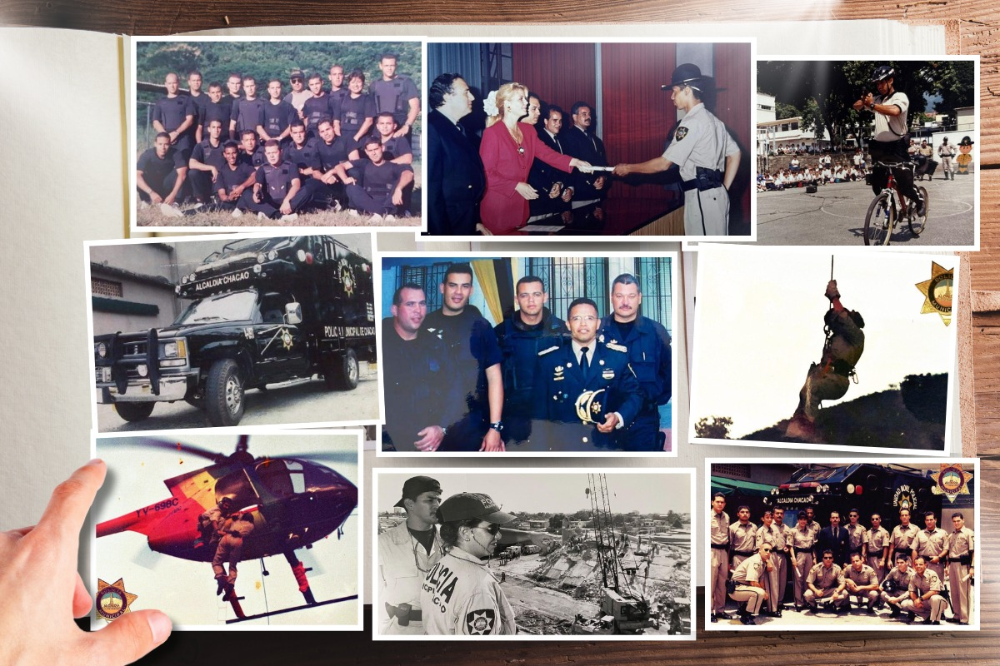
Con la entrada en vigencia de la reforma de la Ley Orgánica de Régimen Municipal del 15 de junio de 1989, la figura del Distrito Sucre desaparece, dando nacimiento a los municipios Sucre, Baruta, El Hatillo y Chacao; este último, obtiene su autonomía a partir del 13 de noviembre de 1991, cuando la Asamblea Legislativa del estado Miranda promulgó la ley de creación del municipio de Chacao, publicada en la Gaceta Oficial de la región el 17 de enero de 1992.
Once meses más tarde se celebraron las primeras elecciones directas para escoger a las autoridades del municipio Chacao obteniendo la victoria para el primer mandato la exmiss Universo Irene Sáez Conde, quien tomó posesión el 4 de enero de 1993. Para aquel entonces, Sáez se estrenaba como primera mandataria del sexto municipio más joven del área metropolitana de Caracas, y el de menor extensión, con unas 3.600 hectáreas, pero el de mayor complejidad por ser eje de crecimiento de la ciudad capital.
Iniciando la gestión, el equipo de gobierno se percata que la primordial demanda de los habitantes de Chacao era la seguridad personal y la de los bienes, debido a que el área geográfica era atractiva para los delincuentes, y era considerada de alto riesgo, dada a su intensa actividad comercial y la presencia de afluentes zonas residenciales.
El 12 de marzo del ese año, bajo la ordenanza Extraordinaria N° 022 nace el Instituto Autónomo Policía Municipal de Chacao, el cual fue concebido para la prevención y acción puntual anti delictiva, dar atención inmediata a los hechos punibles, así como también de resguardar los bienes públicos, privados, y de la comunidad, además de mantener el orden, la vialidad, y el tránsito.
Irene Sáez, junto al Comisario General Rafael Enrique Cadalso Acosta (+) y otras autoridades, dan inicio al proceso de formación y capacitación, tanto física como profesionalmente en materia de seguridad y prevención del crimen, a hombres y mujeres destinados a proteger y servir a la comunidad.
Su fundación estuvo marcada por parámetros basados en un acercamiento entre el funcionario policial y el vecino de Chacao, para así crear la cultura del “policía amigo de los ciudadanos”, principal objetivo para el logro de un servicio de calidad integral en cuanto a seguridad ciudadana se refiere, y lo cual constituyó un concepto único para la época, diferenciador de lo que el colectivo consideraba era un “policía”.
Un concepto único para la época, diferenciador de lo que el colectivo consideraba era un “policía”.
PoliChacao fue pionera en la implementación de radios de comunicación vecinal, que mantiene a los residentes en contacto directo e inmediato con el cuerpo policial. Una policía preparada, equipada, con brigadas caninas, unidades móviles que sirvieron de estaciones policiales, dotadas con los más sofisticados equipos, pero sobre todo un cuerpo que mantiene un vínculo canalizador de los problemas que se presentan en la comunidad.
Más adelante en 1994, el tránsito en el municipio requirió una acción inmediata y eficaz, producto de los inmensos problemas creados por un agobiante tráfico continuo que incidía directamente en la calidad de vida del habitante y del trabajador de Chacao.
Con el apoyo del Mayor(r) de la Guardia Nacional Francisco García Cuervo, se da respuesta y se crea la primera Inspectoría de Tránsito en Chacao denominada Instituto Autónomo de Tránsito, Transporte, y Circulación IATTC, dando resultados muy positivos.
El ejercicio de las funciones del IATTC, se basó en una estructura de apoyo dinámico y puntual, formada por policías de circulación que se desplazan en motos patrullas, unidades funcionales, mini buses y patinetas, cubriendo rápida y eficazmente la autopista, calles y avenidas.
Los Policías de Circulación fueron pivotes del entrenamiento, jóvenes universitarios en su mayoría quienes conformaron un equipo de 190 personas encargados de ordenar la movilización del transporte en Chacao, y brindar un servicio de vigilancia y fiscalización permanente.
En 2010, y de conformidad con la Ley Orgánica del Servicio de Policía y del Cuerpo de Policía, pasa a formar parte del Instituto Autónomo Policía Municipal de Chacao con la denominación de Dirección de Vigilancia y Transporte Terrestre.
Actualmente se encarga de controlar la circulación peatonal y vehicular; el ordenamiento de la circulación vial a través de los semáforos, la demarcación y señalización. Además, supervisar y controlar el sistema de transporte público municipal, el levantamiento e instrucción de expedientes por accidentes viales y el registro computarizado de infracciones de tránsito.
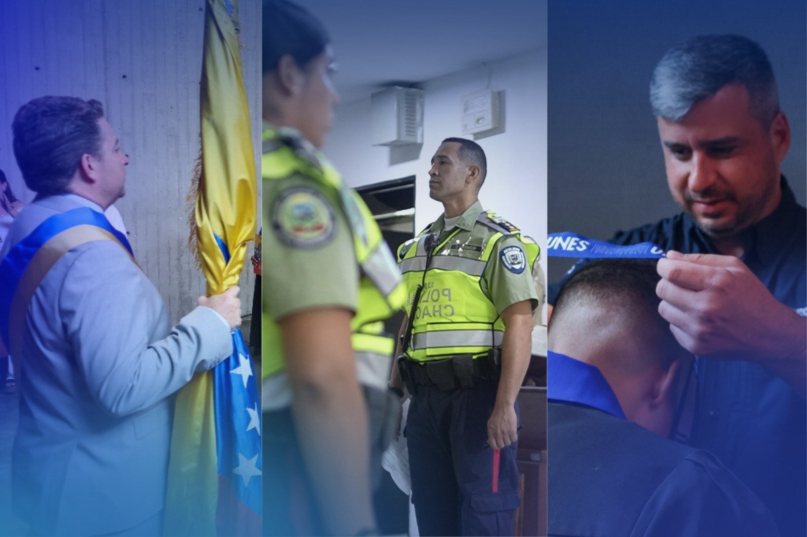
Ser el mejor aliado del ciudadano garantizando la protección del libre ejercicio de los derechos, deberes y libertades de las personas; así como prevenir y combatir el delito a fin de crear las condiciones necesarias para generar bienestar y mejorar la calidad de vida de los habitantes y transeúntes del Municipio Chacao. Brindar un excelente e integral servicio de seguridad ciudadana soportado en tecnología de avanzada, eficiencia y en la calidad del talento humano.
Ser la mejor policía municipal de América Latina. Organizada, cohesionada, preparada y dotada con la tecnología de punta, operando de forma desconcentrada e integrada con la Comunidad y dispuesta a garantizar el municipio más seguro del Continente.
Honor: Cualidad moral que nos obliga a cumplir por convicción con nuestros deberes.
Justicia: Proceder de acuerdo a las leyes vigentes.
Lealtad: Fidelidad al juramento prestado a la institución, a la comunidad, a los superiores, a los compañeros y subalternos.
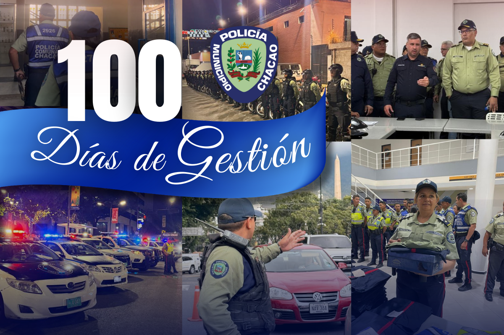
En Chacao la gestión de Seguridad Ciudadana es prioridad. Es por ello que, desde noviembre de 2024, se han venido realizando avances importantes para fortalecer a la Policía Municipal, reivindicar a nuestros funcionarios y brindar un mejor servicio a la ciudadanía.
Al asumir la dirección el Comisario General Luis Gonzalo Fernández, se realizó una reingeniería en el cuerpo de seguridad, iniciando con el nombramiento del subdirector de la institución Comisario Jefe José Ramírez Guanipa junto a una serie de cambios en la plantilla policial. Se restableció la conexión del Sistema de Investigación e Información Policial (Siipol) del Cuerpo de Investigaciones Científicas, Penales y Criminalísticas (Cicpc), lo que ha permitido fortalecer la función policial y la verificación de personas en la calle.
En el parque automotor se han recuperado y puesto en marcha un autobús oficial, y 14 unidades patrulleras con cambios y actualización de cocteleras con tecnología led para tener mejor presencia policial en las calles del municipio.
Nuestros servidores públicos han sido provistos de nuevos uniformes con la más alta calidad y el confort necesario para realizar un trabajo eficiente, dar un mayor rendimiento y mostrar una buena imagen ante los ciudadanos. Esto aunado a unos incentivos salariales que buscan enaltecer la figura del Policía de Chacao.
Nuestra sede policial ha sido restaurada en sus diversas áreas comunes y de oficinas, teniendo mayor luminosidad y contando con nuevas cámaras de seguridad que permiten la visualización idónea de todo lo que ocurre en las instalaciones.
Igualmente fue colocado un sistema de reconocimiento facial para el control de acceso, con un mecanismo de activación de puertas magnéticas de seguridad en sus entradas y en el parque de armas.
Por su parte en el Centro Preventivo de Resguardo y Garantías del Aprehendido fueron puestos vidrios de seguridad y se creó un espacio para mejorar el control de los detenidos y su visita.
PoliChacao en números en 100 días de gestión:
Verificaciones por el Sistema de Investigación e Información Policial (Siipol)
| NOV 2024 | DIC 2024 | ENE 2025 | TOTAL | |
|---|---|---|---|---|
| PERSONAS | 1580 | 2095 | 2238 | 5913 |
| MOTOS | 765 | 1583 | 988 | 3336 |
| VEHÍCULOS | 197 | 353 | 388 | 1376 |
| ARMAS | 2 | 2 |
• Total de Aprehensiones de personas solicitadas: 43
• Total de Actuaciones Positivas - Aprehensiones = 50
Robo: 5
Hurto: 14
Riña: 4
Lesiones personales: 8
Violencia contra la mujer: 8
Drogas: 1
Ultraje: 5
Amenazas de muerte: 1
Abuso: 1
Actos lascivos: 1
Estafa: 2
• Total de sanciones administrativas impuestas (multas) = 16.752
• Total de vehículos remolcados por infracción = 2.963
En Chacao, somos innovación, tecnología, vanguardia y sobre todo Orden y Seguridad.
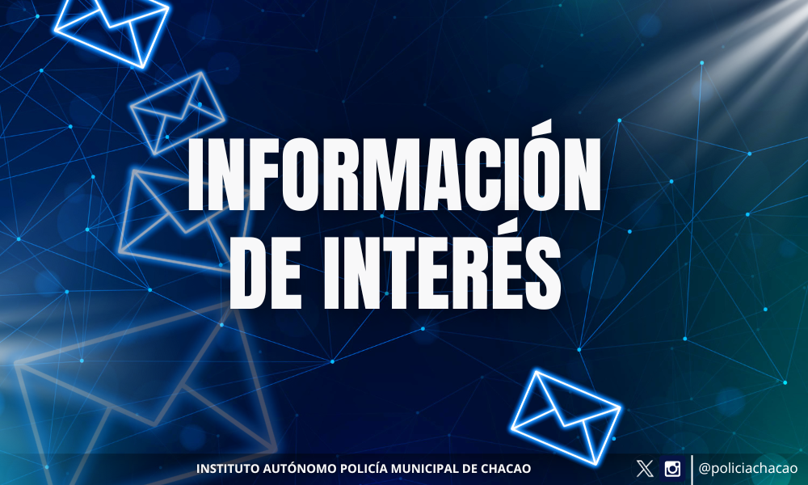
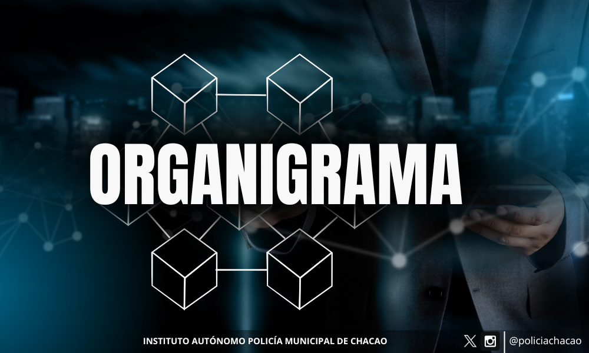
Estructura Organizativa
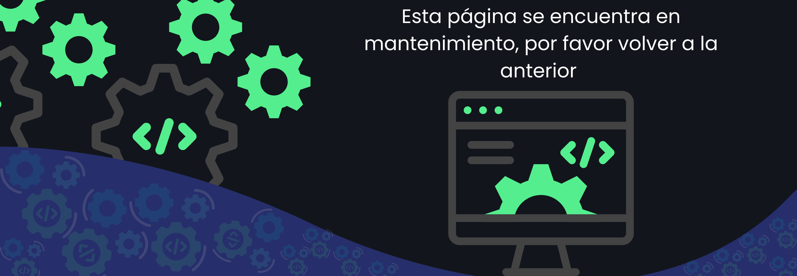
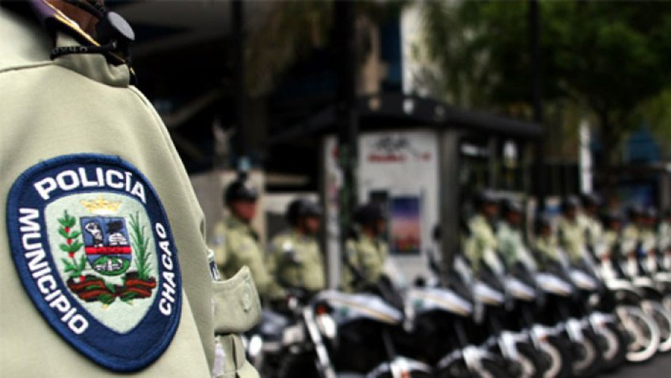
Evaluación de Supervisión Continua
Ver Niveles en Evaluación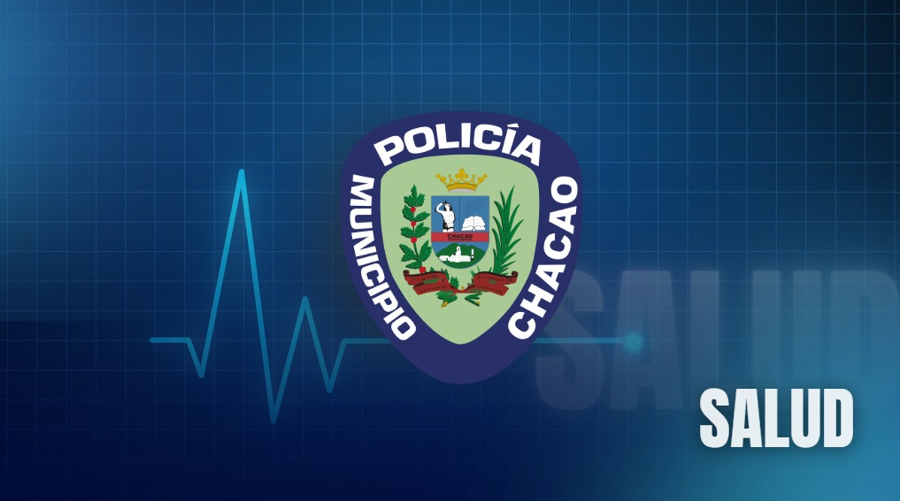
Servicio Médico
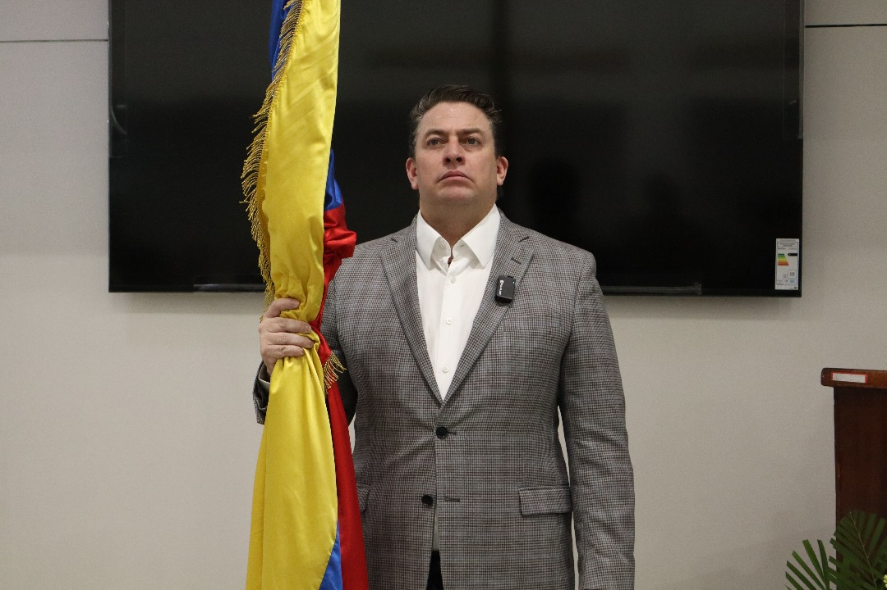
Ciudadano Alcalde del Municipio Chacao

Director General
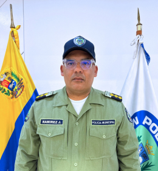
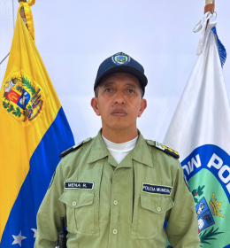